lec-25 RNN
Table of Contents
1 RNN
1.1 Conditional Generation by RNN and Attention
Outline
- Generation : 如何产生 structure 的 object
- Attention : 产生 structure data 的辅助工具
- Tips for Generation
- Pointer Network
1.2 Generation
Generating a structured object component-by-component
1.3 Generate a sentence
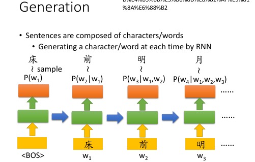
[作业一，language model,给一个 word seq, predict 下一个 word.]
注意中英文对 character/word 的定义不同： 英文 char: a~z 英文 word: hello 中文 char: 明（一个字） 中文 word: 明月（一个词） <BOS> char: a symbol of begin of sentence
1.3.1 Generate an image, linear relation
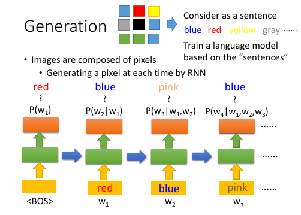
RNN 不仅仅可以用来产生句子，也可以套用在产生 image 上：把之前的句子看成一张图片，每一个 word 就是一个 pixel.
sentence ~ image word ~ pixel
[李老师 ML 课程中产生宝可梦就是用这个方法]
1.3.2 Generate an image, 2-d relation,3-d grid LSTM
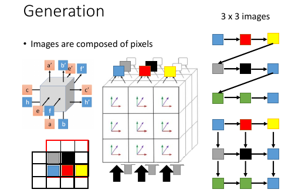
这里是 grid LSTM 最常用到的地方
刚才的方法略有不妥之处：他是线性的，没有考虑 image 是一个平面，平面上的每一个 pixel 都会受到周围的点的影响。（其实线性也可以，因为 RNN 可以的输入是之前走过的所有 obj 组成的 seq）。
怎么考虑周围像素点的影响呢？使用 3 dimensional grid LSTM, 如何构造这个网络呢？ 从下往上形成 3*3*3 的正方体。正方体从最下面输入，从最上面输出。输入的东西是采用类似 CNN 中的 filter 过程，取 filter 2*2 从 3*3 的图片左下方开始放置 filter 每一次从左往右挪动一格，一行完了，上升一行从左往右挪动。
如果 filter 框内有已经确定颜色的 pixels, 就把他们作为产生下一个颜色的 grid LSTM 的输入。可以看出，这种方式很好的解决了【平面关系】。
+---+---+---+ +---+---+---+ +---+---+---+ +---+---+---+
| | | | | | | | | | | | | | | |
+---+---+---+ +---+---+---+ +---+---+---+ +---+---+---+---+
| | | | | | | | | | | | | |?-g| | |
+---+---+---+---+ +---+---+---+ +---+---+---+ +---+---+---+---+
| |?-b| | | | b |?-r| | | b | r |?-y| | | b | r | y |
|---+---+---+---+ +---+---+---+ +---+---+---+ +---+---+---+---+
| | | | | | | | |
+---+---+ +---+---+ +---+---+
1.4 Conditional Generation
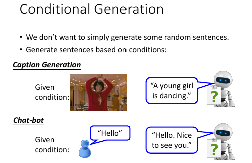
希望 Generator 应该可以根据条件来产生东西，而不是随机的产生。比如，
- caption generation, 字幕产生应该是根据那一秒的画面
- chat-bot, 应该根据上一句甚至上百句的对话产生下一句的内容
1.4.1 Image as a condition
image caption generation
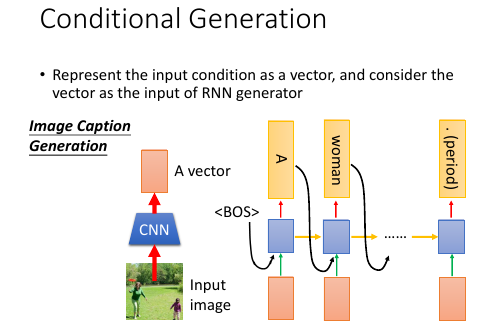 怎么做 image caption generation 这件事情呢？
- 把图片通过一格 CNN 转换成 vector
- 把这个 vector 输入到每一个 time 的 RNN 上
之前用 RNN 的输入只是之前所有 RNN 的结果，而这里给每一个 RNN 又加上了一张图片，需要给每一个 RNN 都加上，防止其遗忘。
time 1: RNNinput = image+<BOS>
RNNoutput = A
time 2: RNNinput = image+A
RNNoutput = women
time 3: RNNinput = image+woman
RNNoutput = is
1.4.2 Sentence as a condition
machine translation
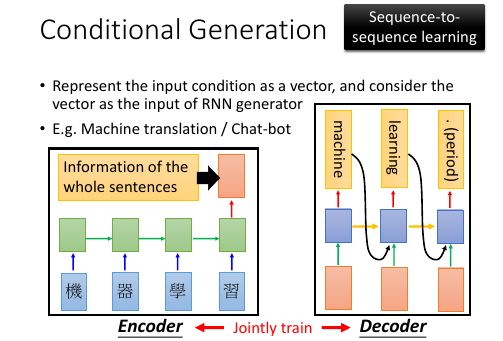 [作业二就是这个]
encoder and decoder.
这里是做 machine translation, 总体思想是把需要翻译的一句话映射到一个集中的 vector 中（这对应上一页 ppt 做图片字幕也要通过一个 CNN把图片转换成一个 vector, 这里是用 RNN 做这样的转换，因为输入和输出都是一个有上下文信息的 sequence），然后把这个 vector 输入到每一个RNN 生成对应的翻译。
整体看有点像【打包】和【拆包】的过程，所以叫做 encoder 和 decoder
这里包含两套 RNN(绿色方块和蓝色方块).
jointly train.
两套 RNN 可以相同 or 不同参数encoder 和 decoder 可以 jointly train, 就是合并组成一个大的 NN. 两套 RNN 可以选择不同的参数，也可以选择相同的参数。如果对模型能力要求高就选择不同的参数，如果需要防止 overfitting 就应该选择相同的参数。
Sequence to Sequence Learning
整体看输入是一个 word seq, 输出也是一个 word seq. 他们都是通过一串RNN 实现的。
1.4.3 Long term sentences as a condition: Chat-bot
Serban, Iulian V., Alessandro Sordoni, Yoshua Bengio, Aaron Courville, and Joelle Pineau, 2015 "Building End-To-End Dialogue Systems Using Generative Hierarchical Neural Network Models.
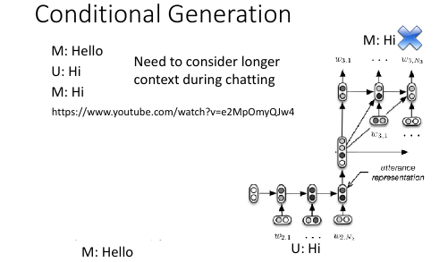
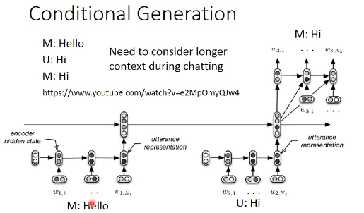
Long term sentences
在做 chat-bot 时情况可能会更复杂一些，因为我们希望尽可能多的记录之前的谈话内容，这样 chat-bot 会显得更智能一些。所以这里需要把过去很多对话内容（包括语者的话和 chat-bot 自己的话）都 encode 到一个 vector 中。
2 layers encoder
一个可能的方法是使用两层 encoder: . code-------+ . ^ | . | | . RNN ----------------> RNN -----------> RNN | . | | | | . code1 code2 code3 | . | | | | . RNN->RNN->RNN->RNN RNN--RNN--RNN--RNN RNN--RNN--RNN | . / / / / / / / / / / / | . what is your name my name is John how about you | . | . | . | . +-------+-------+--------------+ . | | | . v v v . RNN /-->RNN /-->RNN . | / | / | . I am Alice
1.5 Attention(Dynamic Conditional Generation)
跟普通的 RNN 生成不同，普通 RNN 是囫囵吞枣，一口闷，把整个【东西】喂给 decoder 的每一个 RNN. Attention-based model 是不论什么【东西】都必须拆成 component,然后给每个 component 一个attention(weight), 每一个 component 喂给 decoder 的每一个 RNN.
文章 拆成 句子
句子 拆成 单词
图片 拆成 一块一块
视频 拆成 图片
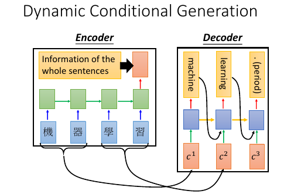
- 句子太长信息都放在一个 vector 中，可能放不下。
- 集合了这么多信息的 vector 输入给每一个 decoder RNN ,而这个 RNN 只需要很小一部分
- 可以把句子拆开送给 RNN 一部分
1.5.1 Machine Translation by attention-based model
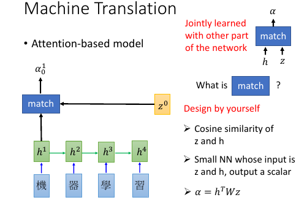
基本过程： . (v):vector . (s):scalar . . time 0 : given z0 . (v)z0 (v)z1------------------+ . | ^ | . v match | | . 机 -> RNN -> (v)h1 ---> (s)α10*(v)h1 \ \ | . 器 -> RNN -> (v)h2 ---> (s)α20*(v)h2 - Σ -> (v)c0 -> RNN -> _'machine'_ | . 学 -> RNN -> (v)h3 ---> (s)α30*(v)h3 / | . 习 -> RNN -> (v)h4 ---> (s)α40*(v)h4 / | . \________________________________________________/ \______________/ | . v v | . encoder decoder | . \__________________________________________________________________/ | . v | . time_1: input z0 to encoder get c0, | . c0 as input to decoder | . output z1,'machine' | . _______________________________________________________| . | . v . (v)z1 (v)z2------------------+ . | ^ | . v match | | . 机 -> RNN -> (v)h1 ---> (s)α11*(v)h1 \ \ | . 器 -> RNN -> (v)h2 ---> (s)α21*(v)h2 - Σ -> (v)c1 -> RNN -> _'learning'_ | . 学 -> RNN -> (v)h3 ---> (s)α31*(v)h3 / | . 习 -> RNN -> (v)h4 ---> (s)α41*(v)h4 / | . \________________________________________________/ \______________/ | . v v | . encoder decoder | . \__________________________________________________________________/ | . v | . time_2: input z1 to encoder get c1, | . c1 as input to decoder | . output z2,'learning' |
z0
是一个初始向量，用来跟每一个字的 RNN 之后的向量做【相似度】匹配
h
是 encoder 的 RNN 的 hiden layer 的 output,是一个 vector
match 是一个用来衡量相似度的函数，需要自己定义
1) match = cos similarity, 2) match = NN 因为 NN 也可以看做一个函数。 如果 match 是一个 NN 的话，input 就是 字的 RNN 之后的 vector 和 z0. output 是一个 scalar. 这个 NN 可以 和整个 encoder 一起训练，jointly learned 3) match = matrix 因为矩阵也可以看做一个函数。 如果 match 是一个矩阵的话，α = hTWz
α10 的意义
用来衡量 z 与 h 的【匹配度】【相似度】上标‘1’表示原来【整体】第 1 个 component 下标‘0’表示第 0 时刻，每一个时刻都会产生一个【翻译结果】
整体看来，z 的作用就是和 match 函数一起为每一个字生成【attention】－－weight. 让每次翻译的时候不是看所有的字，而是看某几个字;
整体看，z 作为
decoder.RNN的 hiden layer output. h 作为encoder.RNN的 hiden layer output. 两者会以训练集结果为导向，两个 RNN 联动自动的调整自己的参数，来适应每一次的训练。最终两个 RNN 会形成默契，遇到新的数据也采用这种方式。
整体看，attention-based model 比之前的 model 多 train 了一个东西，横向的【截取幅度】纵向上，RNN 每次需要依据 z 给出的【截取的字－－关注的字】做翻译横向上，所有 RNN 要一起联动来调整所有 z 的【截取幅度】
整体看，原来的模型是 整个句子 ---> encoder -> vector(code) -> decoder ---> 译句
现在的模型是 句子片段 1 ---> encoder -> vector -> decoder ---> 译句片段 1
\_____> 下一个【截取片段】的范围
句子片段 2 ---> encoder -> vector -> decoder ---> 译句片段 2
\_____> 下一个【截取片段】的范围
整体看，原来的模型只需要训练翻译，现在的模型不但训练翻译还要训练出下一个【截取片段】的范围 decoder.RNN 原来的输入是： 上一次翻译的结果 + 所有待翻译的字 decoder.RNN 现在的输入是： 上一次翻译的结果 + 截取的字 + 截取长度 xxxxx xxxxx xxxxx -- - -- z1 ->yy z2 ->y z3 ->yy or xxxxx xxxxx --- -- z1 ->yyy z2 ->y 每个 RNN 要有自己的工作，所有 RNN 还要联动
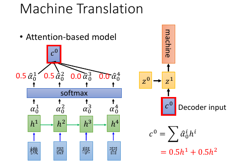
- softmax 未必需要
- z1 也不一定是 RNN 的 hiden layer
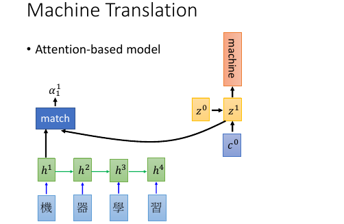
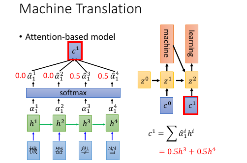
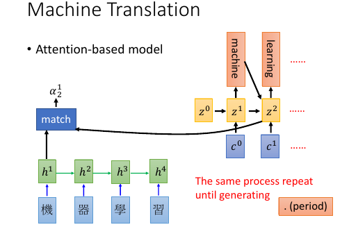
1.5.2 Speech Recognition by attention-based model
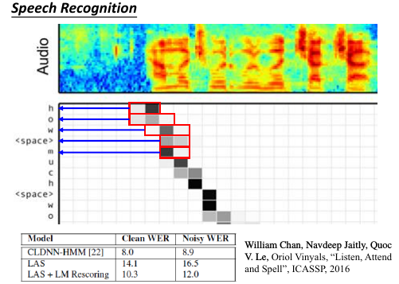
- 传统与 attention-model 区别传统方法是要比 attention-model(这里是 LAS—Listen,Attend and spell) 好的。但是传统方法需要很多 domain-knowledge, 而 attention-model 不需要。
解释上面的彩图是 audio 的采样图，可以把它看成一个矩阵，横向时间，纵向信号。每 0.01s 截取出信号，這些信号作为一个 vector,通过 z 匹配的效果就是黑灰色方块。可以看到，每次【截取的范围】是有相互重叠的。并不像之前想的，每次截取范围不重叠。
. xxxxxxxxx . -- . --- . -- . ---
大概是这种模型，既然是这样，还需要考虑前【上一次的翻译的结果】么？ decoder.RNN 现在的输入是： 上一次翻译的结果 + 截取的字 + 截取长度这个有待实进一步验证。
1.5.3 Image Caption by attention-based model
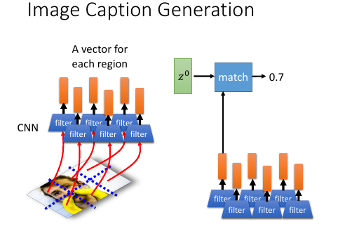
- 图片转换方式的改变. 做 Image caption,根据之前的分析可知：需要的是很多 vector, 而不是一个很大的 vector. 而我们平时都是对 Image 映射成一个 vector.所以要使用 CNN 的 filter,利用每个 filter来产生图片上每个小块区域的 vector
注意生成的权重 C 是一个类似和为 1 的权重：
eg. 翻译： 我 是 个 好 孩 子 ----------- c1 c2 c3 0.1 0.8 0.1
我之前的理解有问题，我决定是所有的都均等重要。
【截取的范围】是有相互重叠的
. xxxxxxxxx . -- . --- . -- . ---
- 3) 这两个一同理解，应该就足够全面了。
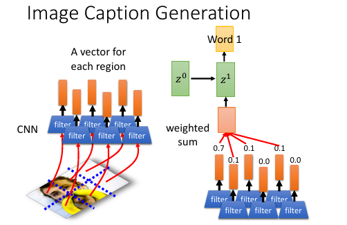
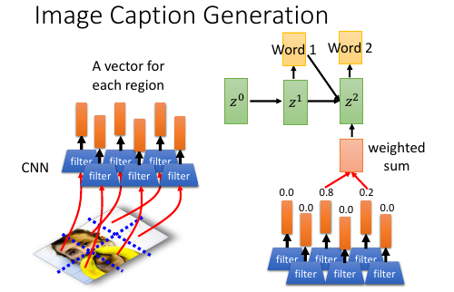
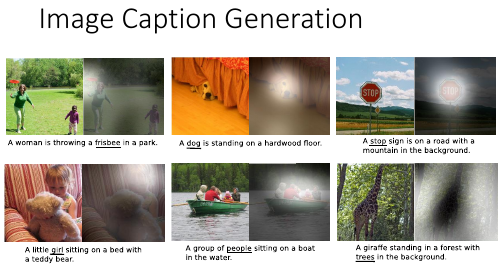
Kelvin Xu, Jimmy Ba, Ryan Kiros, Kyunghyun Cho, Aaron Courville, Ruslan Salakhutdinov, Richard Zemel, Yoshua Bengio, “Show, Attend and Tell: Neural Image Caption Generation with Visual Attention”, ICML, 2015
1.5.4 Video Caption by attention-based model
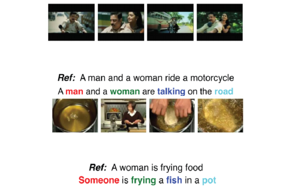 [作业二就是做这个东西] Li Yao, Atousa Torabi, Kyunghyun Cho, Nicolas Ballas, Christopher Pal, Hugo Larochelle, Aaron Courville, “Describing Videos by Exploiting Temporal Structure”, ICCV, 2015
1.6 Memory Network
memory network , nueral turing machine 是在 memory 上面做 attention
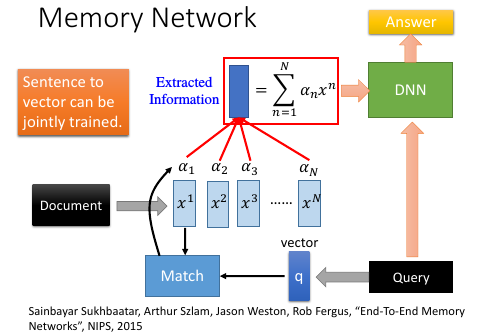 Sainbayar Sukhbaatar, Arthur Szlam, Jason Weston, Rob Fergus, “End-To-End Memory Networks”, NIPS, 2015
- Memory Network 就像一个问答系统，一个 reading comprehension 系统：给 machine 看一个 document, 然后给一个 query 看 machine 能否给出正确的答案。三要素：
- 文章 document
- 提问 query
- 答案 answer
- Document 中有很多句子，每个句子用一个 vector 表示，整篇文章用 vectors 序列来表述文章怎么描述成一个 vectors 序列： 通过 paragraph vector 或者 bag of word 来描述
- z –> q 刚才是学出来的 z, 现在是给一个 z. 用来在作为在数据库中寻找匹配的条件。
- all jointly train
一个更复杂的 memory network
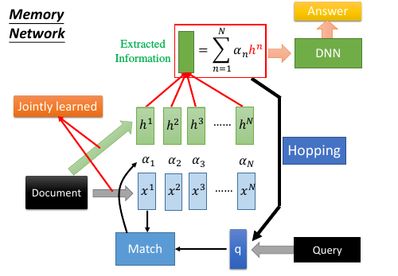
- 同一个句子进行两次转换：算 match 的数据和抽取 information 的数据分开 sentence 经过 bag of word 转换成一个超高维度向量，然后这个向量经过 两个矩阵（NN，函数 ：变成两组不同的 vectors.这里应该跟用 RNN 序列对每一个 char 做转换是相近的过程。不同的是这里需要两个不同的 RNN 序列。其中一个转换后的 vectors 序列用来与 q 进行匹配得到权重 α 。另一个转换后的 vectors 序列用来与 α 组合起来形成一个 code(extracted information).
- Hopping – 不断提纯 extracted information code(extracted infor) 中包含了原始句子的信息和 query 的信息。code 和 q 一起作为 DNN 的 input 去训练这个 DNN 产生答案 answer. 但是也可以不用那么急切的获取答案，可以把 code 同 query 一起作为输入去 训练一个 NN 用来产生 q 向量。 这个过程可以一直重复多次。这个过程叫做 Hopping.
- 1) 中的两个 NN 和 2) 中的 Hopping NN 可以 jointly train.
1.6.1 Hopping process
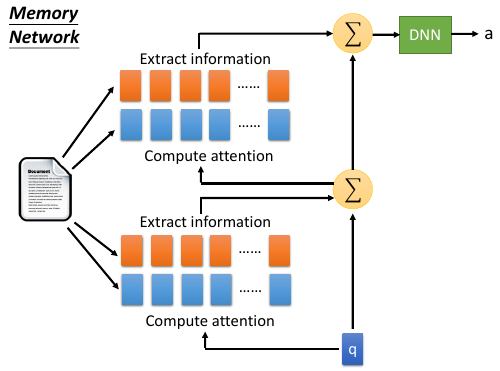
- 两种方案根据自己对模型能力的需要，可以选择，
- 所有蓝色方块用同样的参数，所有红色方块用同样的参数， 参数少模型能力弱不易 overfitting
- 所有四组方块用完全不同的参数，参数较多模型能力强易 overfitting
整体看像是两层的一个训练
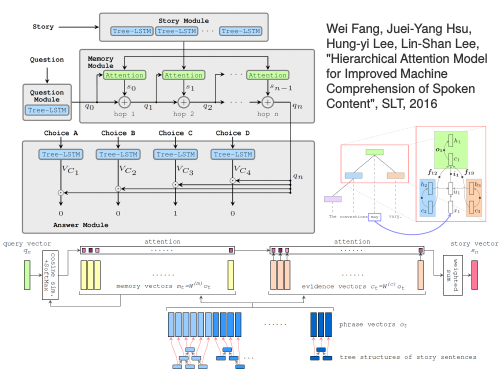
Wei Fang, Juei-Yang Hsu, Hung-yi Lee, Lin-Shan Lee, "Hierarchical Attention Model for Improved Machine Comprehension of Spoken Content", SLT, 2016
1.7 Neural Turing Machine
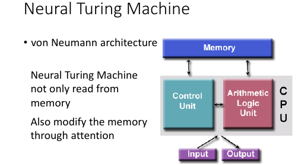
https://www.quora.com/How-does-the-Von-Neumann-architecture- provide-flexibility-for-program-development
Memory Network 是在做两件事：
- 在 memory 上做 attention
- 从 memory 把 information extract 出来
Neural turing machine 不但可以从 memory extract 信息，还可以把修改 memory 的信息。
Neural Turing Machine not only read from memory Also modify the memory through attention
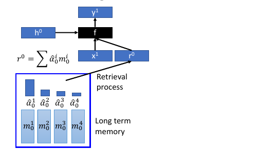
- 结构简介： encoder: Memory is a vectors sequence: m01, m02, m03, m04 α : weight of vector of memory Retrieval process: 获取 code r decoder: f 会额外输出三个 memory control vectors： k – 产生本代权重 e – 把 memory 清空 a – 向 memory 写入新的 vectors
- k 的运算过程其中 k 向量会与上一代 Memory 的每一个 vector 做一波 cosine similarity 然后，然后得到的值做一波 softmax 得到本代的权重
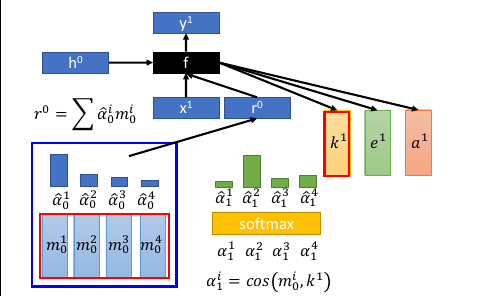
k 向量详细运算过程（李老师略过）
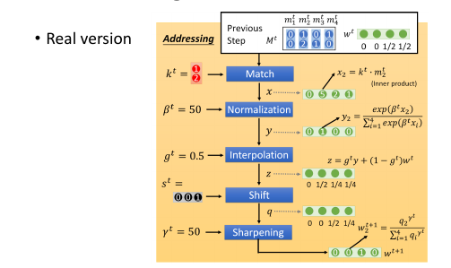
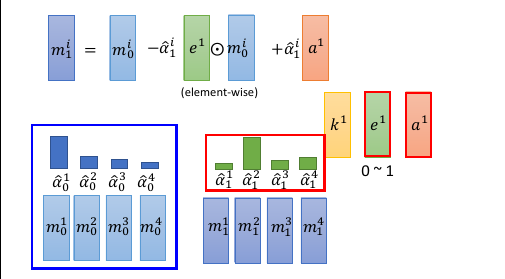
- e 的运算过程 e 向量与原来 memory 中的一个 vector 做 element-wise 的乘积，结果还是一个向量。这个向量再通过这一代的权重的相对位置的乘积之后，与前代 memory 中的这个 vector 做减法。这是 erase 过程，他是根据权重以及 e 向量来擦除 memory
a 的运算过程擦除之后加上对应的权重和 a 向量的乘积（还是一个向量） 实现重写 memory 对应位置的向量。
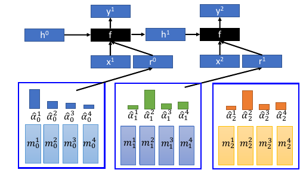 如果 f 是一个 recurrent network 就可以输出一个 h1 ,这样可以把自己的记忆信息传给下一代
2 Tips for Generation
[作业中要用]
2.1 加入 regular 防止网络瞎鸡巴分配 attention
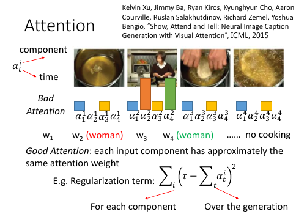
Kelvin Xu, Jimmy Ba, Ryan Kiros, Kyunghyun Cho, Aaron Courville, Ruslan Salakhutdinov, Richard Zemel, Yoshua Bengio, “Show, Attend and Tell: Neural Image Caption Generation with Visual Attention”, ICML, 2015
- 给 attention(weight) 设置 regularization 强迫 attention 是你喜欢的样子. 由于 attention(weight) 的决定权完全交给整个 NN 去训练，不加任何限制就会产生失控的情况。由于 attention(weight) 会决定每次 decode 的侧重点不一样，所以 attention(weight)对于最后的结果有重大影响。 为了不让 NN 瞎鸡巴给 attention(weight),需要人为干预注意力权重的分配，尽量让每一个 component都被【注意到】，也就是说每个 component 最终获得的权重之和，应该都相等并且等于某个值 τ .
bad attention. 注意看上面的柱状图：
这里上标：第幾個 frame; 下标：time 每张图片下方是他在 4 个时间的 attention(weight) 可以看到，第二张图在 第 2,4 个时间的权重相当高。 因为每个时间都会产生一个解释该【attention 截取的 seq 片段】的 word. 所以 第 2,4 个时间产生的 word 都是：woman. 结果这个四个 frame 构成的视频产生的 caption 是：xx woman xx woman 这和我们希望他产生：woman is cooking 是很不一致的。- good attention. 为了保证每一个 component 在完成 caption 时所分配的权重和等于τ . 所以给整个架构在训练的时候加一个 regularization: 一旦违反这个限制就被惩罚
2.2 Mismatch between Train and Test
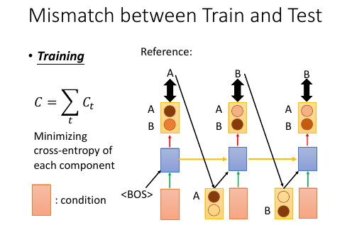
训练的时候，给下一个 RNN 的输入都是训练集也就是 Reference 给出的标准答案训练完成之后，进入 Testing 环节（这里是 Generation 环节）
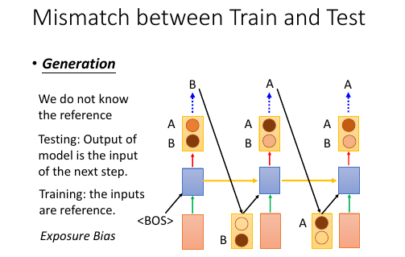
>>> 公共技巧：如何获得【随机】or【稳定】的 RNN 输出 ----------------------------------------------------------------------------- 生成的时候，这里有一个小的技巧，RNN 的输出是一个 distribution vector,想获得输出有两种方法： 1. 输出概率最高的那一位对应的字母作为输出 这种方法比较【稳定】，相同的输入肯定带来相同的输出 2. 从这个概率分布中 sample 一个作为输出 这种方法比较【随机】，相同的输入可能带来不同的输出 -----------------------------------------------------------------------------
Exposure Bias: 朝错误的方向努力，只会让你离目标越来越远注意训练的时候，每一个 time 的输入除了 condition 之外还输入一个【标准答案】但是在 generate 的时候是【没有标准答案】的，所以我们是把上一个 time 的输出作为下一个 time 的输入。
这时会产生两种错误：
- generate 的时候，如果 sample 到另一个结果，因为这里是 seq to seq ,需要考虑上下文信息，一旦某一步错了，他会对后续的结果产生影响，就会产生完全不同的结果。
- 第二种情况是，训练时的一点点错误，会给生成时造成巨大的错误，下页 PPT 探讨，训练时的错误率：5%, 在生成时会被放大到甚至 100%.
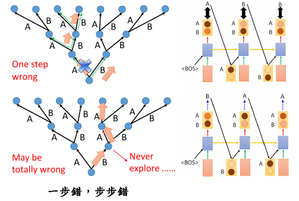
one step wrong in trained model, when this model used in generation, this 'one step wrong' will lead to totally wrong.
2.2.1 尝试修改 train 过程：不可行
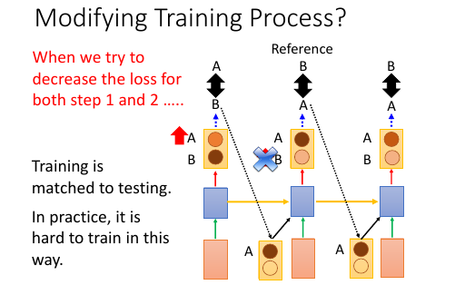
1. 原来 train 的时候用这个 time 的 reference 作为下个 time 的输入 改为 train 的时候用这个 time 的输出作为下个 time 的输入。 这样 train 和 generation 就保持一致了。 *但这样 train 不起来* 2. 为甚么 train 不起来呢？ 可以从 gradient 的角度来分析每一次【输出 != reference】的时候 gradient 会如何调整【输出的概率分布】来看： time1: reference = A, output =B; ref ≠ output. increase the A's probability of output distribution 但此时，根据 1) 的修改，你选择 output 作为下一个 time 的输出， 所以对于 time2: input B will make a A, but ref = B so B will increase probability. 但是现在由于 A 的上升，慢慢的让 time1 的输出由 B->A, 所以这个时候 time2 的输出变成了 A, 之前的那条规则：“input B will make A, but ref=B so B will increase probability” 就废了，就没用了。 所以这种情况会一直发生，有种‘一直在错过’的感觉。
2.2.2 尝试修改 Generate 过程：Scheduled sampling
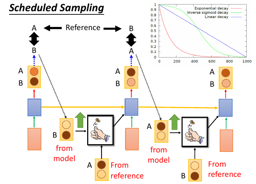
意思是说，既然纠结于选 ref 还是选 output. 那就给个概率：一定几率选 ref, 一定几率选 output. 一般是给一个 ref decay 的概率: 一开始只考虑 ref,然后慢慢增加 output 的概率。经过试验可以断定，这样比只选 ref or output 的模型都要好：
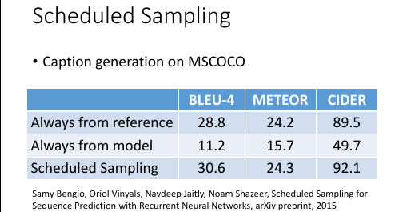
2.2.3 Greedy algo 的弊端
尝试修改 Generate 过程：Beam Search
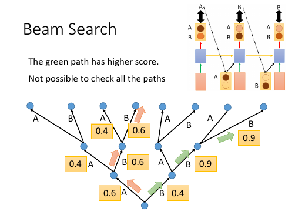
1. 树状图解释 Greedy algo 很好的解释了‘每一步都是选择【他能看到的概率中最高的】’ 这件事情。 2. Greedy algo 其实整个 RNN 的架构就相当于一个 Greedy algo 算法： time 1 的输出是这个 RNN 输出的概率分布种最大的； time 2 的输出是这个 RNN 输出的概率分布种最大的； time 3 的输出是这个 RNN 输出的概率分布种最大的； 每一步，他都是选择【他能看到的概率中最高的那个】，但其实我们想要的结果是： P(time1, time2, time3) 是一个联合概率分布。 从这个树状图可以看出，按照我们之前的 Greedy 的做法，是红色路线，但是 很有可能存在一条绿色路线，他的整体联合概率分布是更高的。 但是我们没办法【穷举】出所有的路线，然后每一个都计算一次概率。 3. Beam Search Beam Search 是介于【贪婪】和【穷举】之间的算法
2.2.4 Beam Search 原理
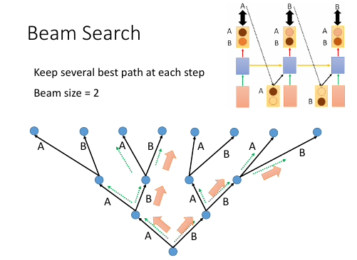 [勘误] 右上角的图应该是 generate 的，这里使用了 training 的。
| Greedy | Beam | Brute force |
|---|---|---|
| best one | best beam size ones | all |
Beam Search algo 是介于 Greedy 和 Brute force 之间的算法，
. Greedy 是【我只看一步，在所有我能看到的中选最好的一个】 . ^ . | . | . Beam 是【我只看一步，在所有我能看到的中选最好的几个】 . ^ . | . | . Brute 是【我只看一步，选择所有的】
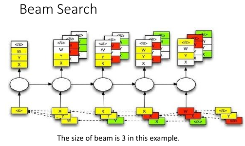
上面树状节点，就相当于经历了一个 RNN 节点. 注意 ppt 最下面那些方块，是一个树状图形
2.3 为甚么不直接使用分布
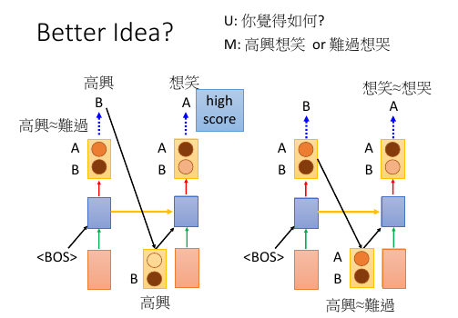 猛一看返回分布，比使用 ref or output 都好的原因：
- 直接传概率分布，好处：解决了【smapling 阻止 BP 算法】的问题
- 直接传概率分布，好处：不用搞什么 greedy or beam 可以直接传概率
为甚么不能传分布？ ..................... 情景： u: 你觉得如何？ m: 高兴想笑 or 难过想哭 +高兴想哭 难过想笑+ ..................... 这个时候 machine 的回答 ‘高兴想笑’ 和 ‘难过想哭’ 都可以,但是 '高兴想哭' 和 '难过想笑' 就不搭调了。 >>> 误搭配 如果使用 sample from output distribution 的方法是没有【误搭配】问题的，因为 存在一种 点到点 的推理关系： 高兴 --> 想笑 or 难过 --> 想哭 但是如果直接返回一个概率分布的话，因为 高兴想笑和难过想哭 都行，第一个单词的概率也 是大体相当的，把这个分布返回给第二个 RNN 就要出问题了： 高兴 ≈ 难过 ---> 想笑 ≈ 想哭 所以这件事情就很随机了，会产生各种各种各样的组合，肯定包含【误组合】的情况。
2.4 Object level vs Component level loss-fn
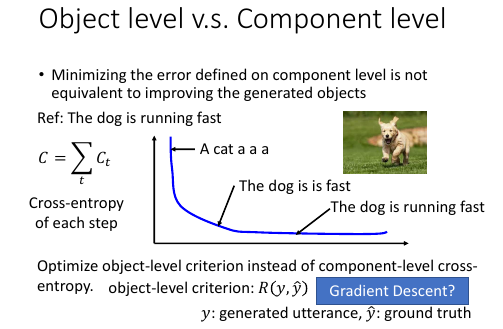
component 级别的最优，并不能保证整体最优 component 级别的优化，是针对局部的，并不能保证整体的【意义】：当我们计算每一个 RNN 输出的单词的 cross-entory 然后把他们加总作为优化目标时，当每个输出都是基本合理的情况下，cross-entropy 已经很小了，这时候再继续优化的动力就会不足。比如： 我们需要的是‘ the dog is running fast’但很多情况这个结构再 'the dog is is fast' 时优化就基本停止了因为此时的 cross-entropy 已经很低了。
所以我们极需要一个 Object level 的目标函数用来衡量【整体】的好坏。
但是这件事情非常不容易，且不说能否找到这样一个函数 R,就算已经找到了，由于这个问题的【离散性】，对于 R(y,y^) 这种函数，Gradient Descent 对其优化也是很无力的，为甚么呢？ 见下
>>> 公共技巧：Gradient Descent 无力处理【离散问题】
------------------------------------------------------- 对于离散问题，比如这里的 seq 2 seq,他的结果不是随着概率而连续变化的 ..................... 情景： u: 你觉得如何？ m: 难过想笑 (想调整为‘高兴想笑’） ..................... 一般处理离散问题，都会在得到一个概率分布，然后跟一个 softmax 选取概率 最大的作为结果，这时候微调参数产生的概率分布上的微小改变并不足以【让概率 最大的位置易主】： . 优化前 优化后 . -------- --------- . 难过 高兴 -->Gradient descent--> 难过 高兴 . 78% 22% 65% 35% . \_______/ \_______/ . v v . softmax softmax . v v . 难过 难过 所以连续 GD 优化一旦被停止就没法继续进行了。 -------------------------------------------------------
2.5 RL 呼之欲出：Object level vs Component level loss-fn
Facebook 提出的方法，用来解决整体优化和离散优化的问题
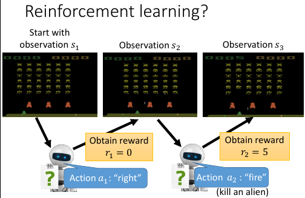
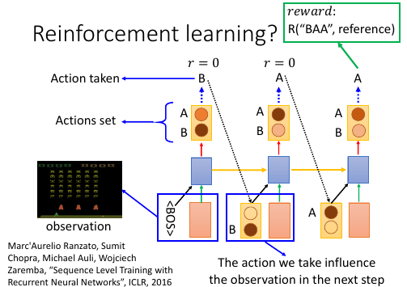
- RNN 输出的概率分布 看成 RL:Action Set
- output 结果 看成 RL:Action taken
- 把所有的输入（来自上一层的输出＋condition）都看成是 action taken 之后的 Observation
- 所有的前面的步骤 reward = 0; 最后一步输出一个【整体】之后才给出 reward.
- 目标就是 maximize Reward
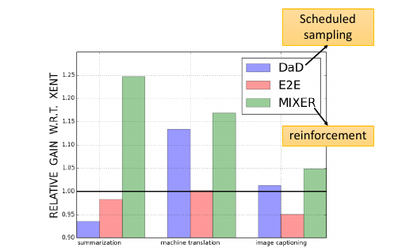
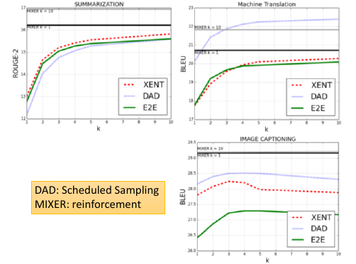